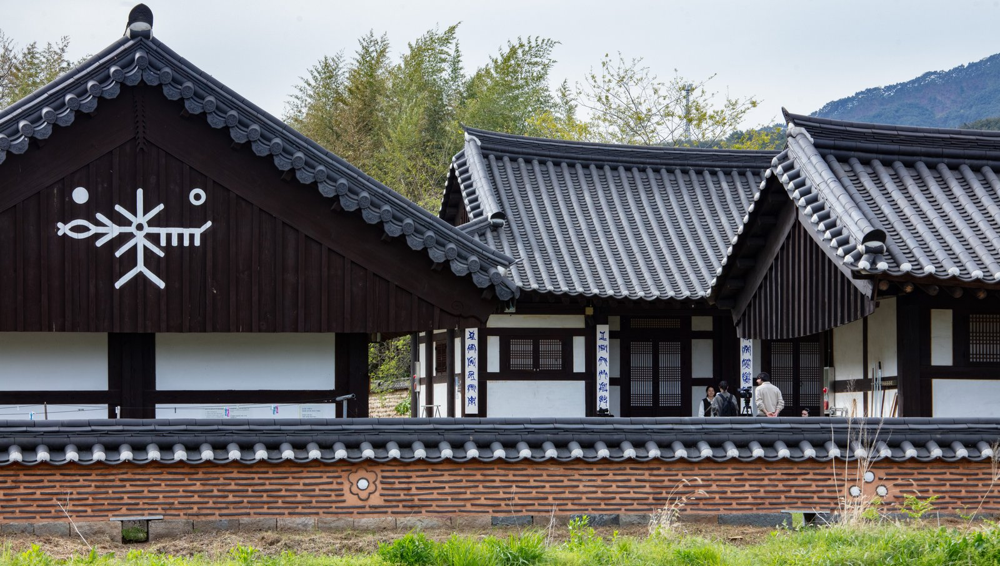
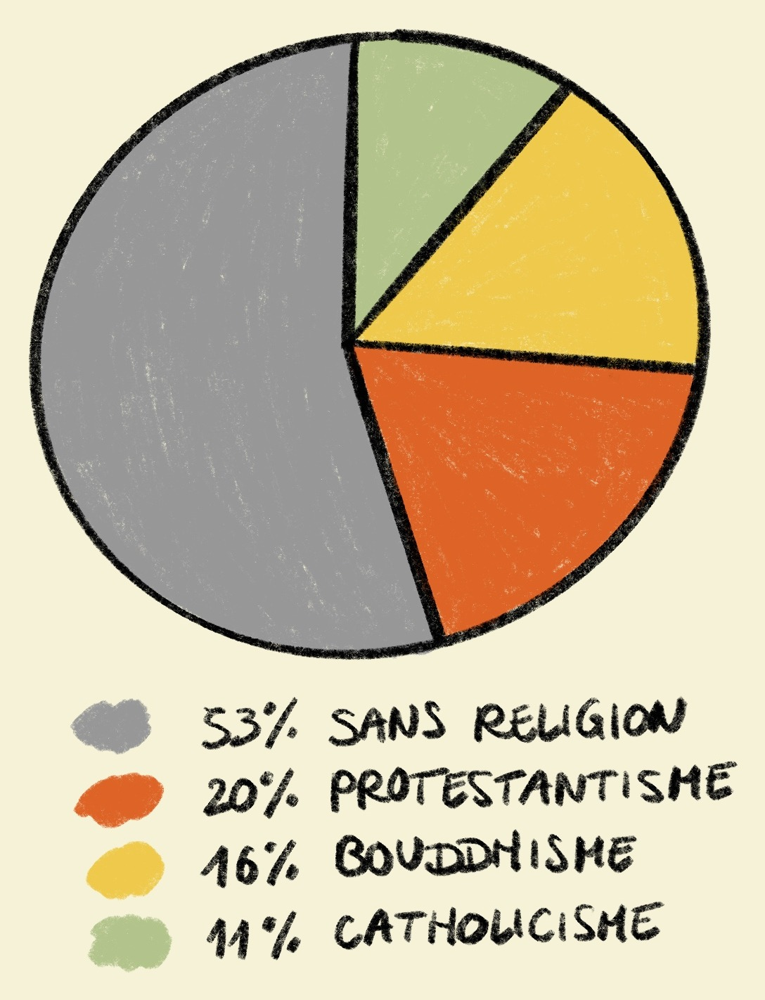
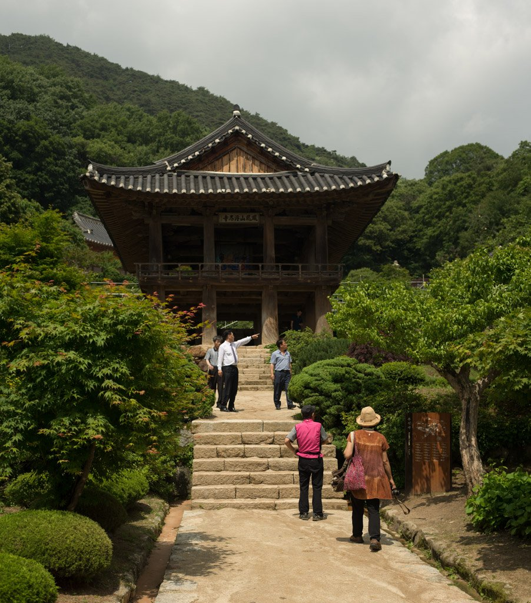
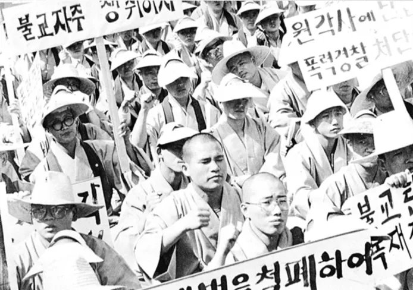
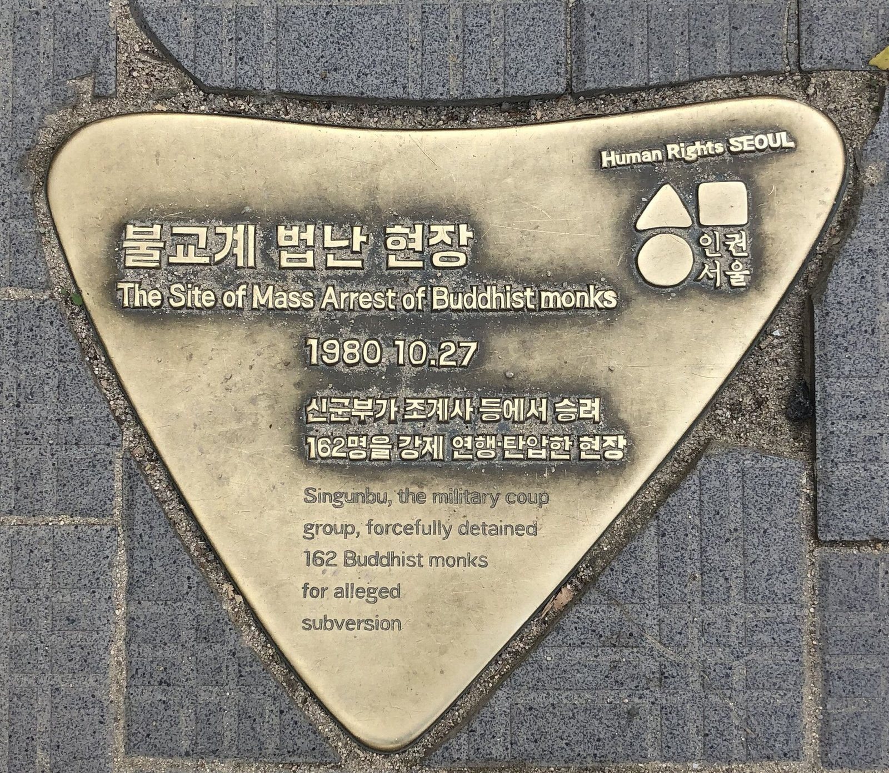
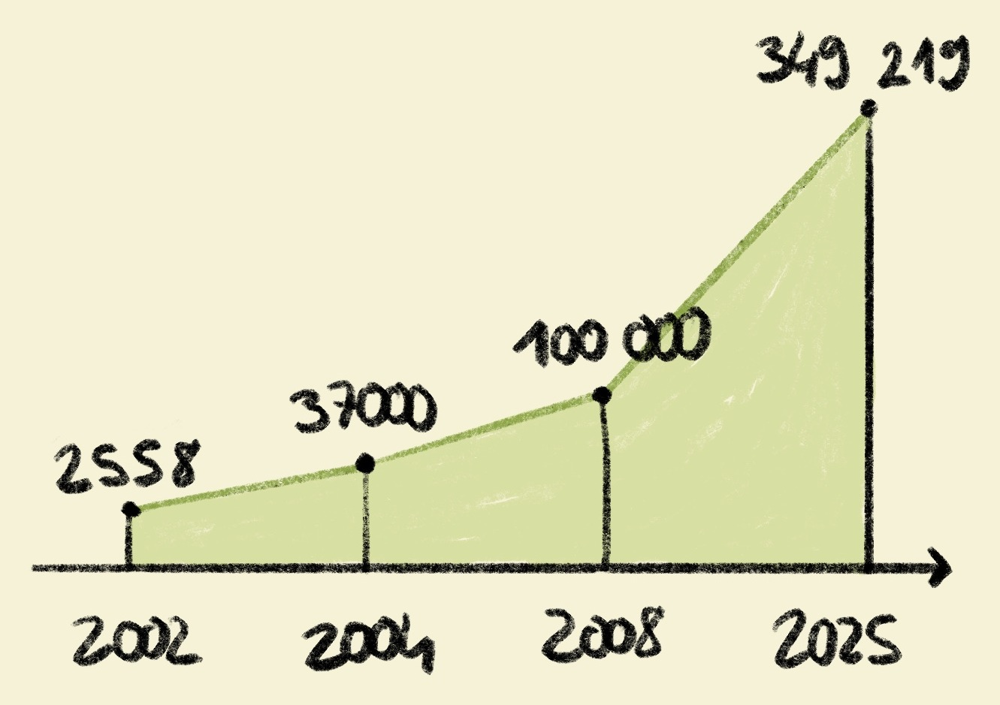
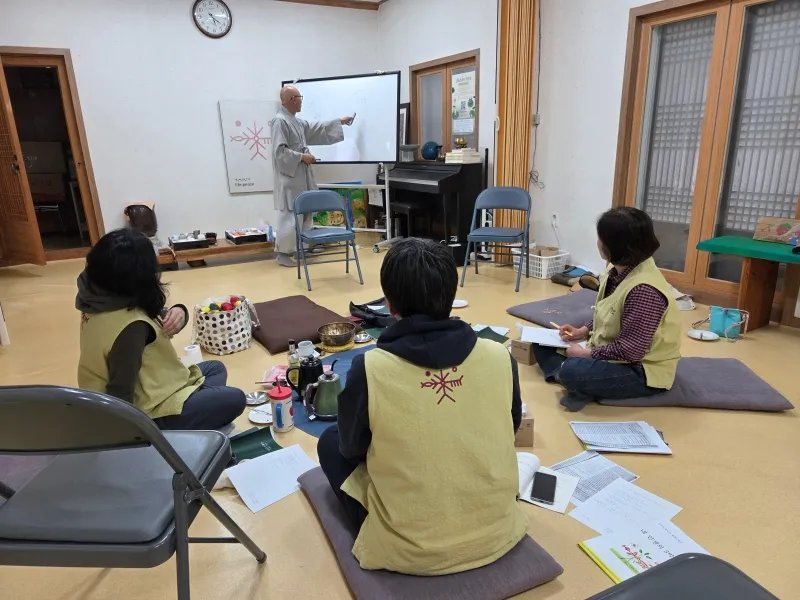
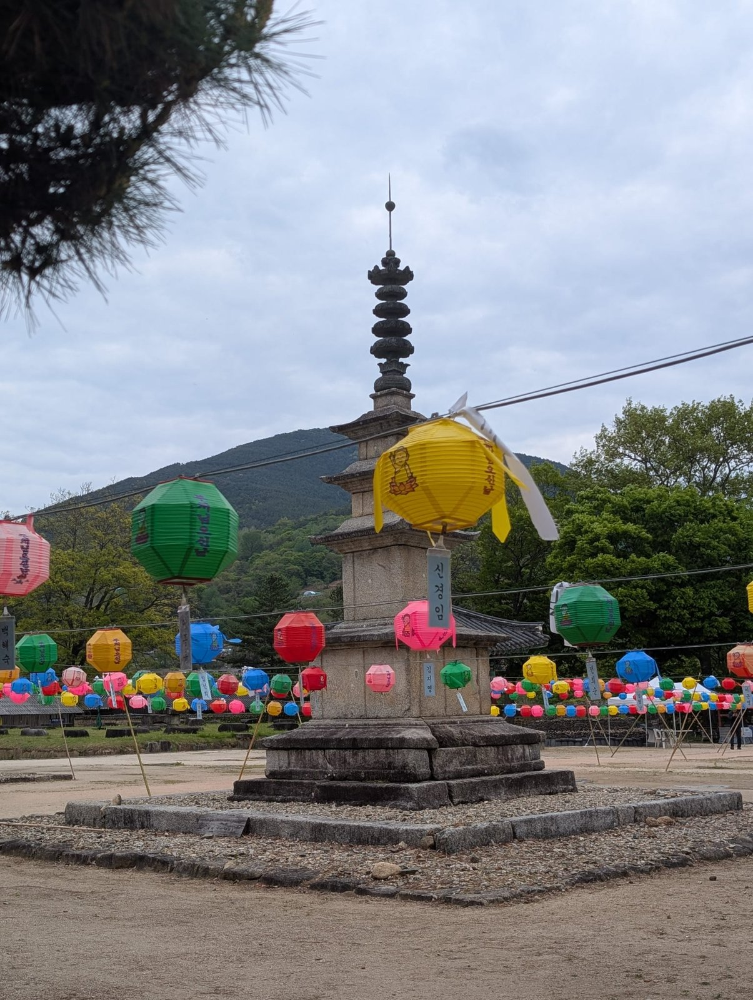
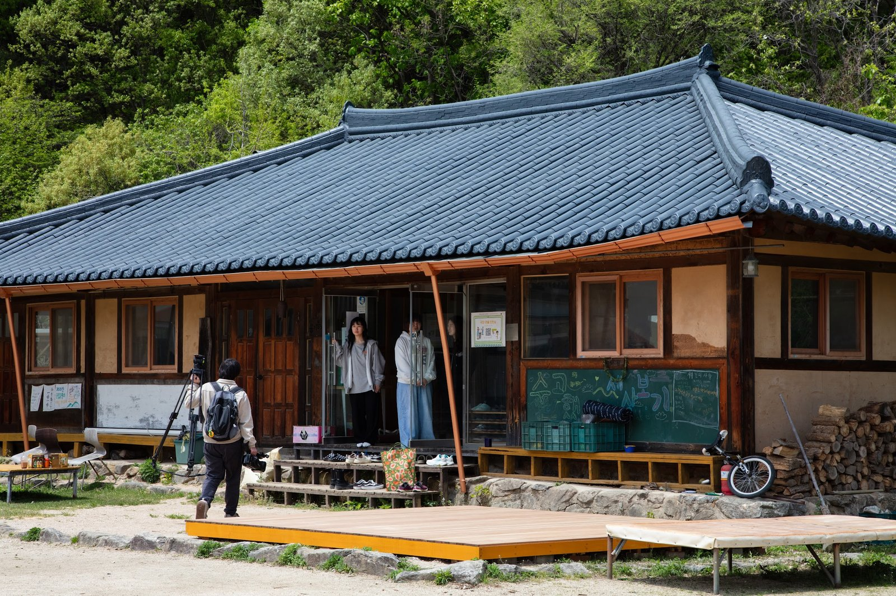

Silsangsa et l'Indra's net

1. Le bouddhisme dans la Corée contemporaine
Longtemps religion dominante, le bouddhisme n'est plus aujourd'hui que la deuxième confession du pays, et une confession en recul.
Depuis 2019, les enquêtes le situent autour de 16-17 % de la population, derrière le protestantisme (20 %) et devant le catholicisme (11 %), tandis que la moitié des Coréens se déclarent sans religion, une part des « sans-religion » passée d'environ 43 % en 2004 à près de 53 % en 2023. Le décrochage est net sur le temps long : le bouddhisme est tombé de 22,8 % de la population au recensement de 2005 à 15,5 % en 2015, et une enquête de 2024 montre que 42 % des Coréens élevés dans le bouddhisme ne s'en réclament plus, au point qu'il apparaît comme la seule grande religion mondiale en déclin.
Deux traits comptent particulièrement. D'abord le vieillissement : 43 % des bouddhistes ont plus de 60 ans et seulement 18 % moins de 30 ans, la population religieuse vieillissant plus vite que la population générale. Ensuite, c'est une religion des régions, pas de la capitale : seuls 39 % des bouddhistes vivent dans la région capitale (contre 51 % de la population), alors que 40 % résident dans le Yeongnam, au sud-est, de toutes les grandes confessions, le bouddhisme est la seule à être concentrée hors de la métropole.

Religions en Corée du Sud (2023)
2. Un bouddhisme de montagne et de campagne
Un bouddhisme de montagne, marginalisé puis consacré
Cet ancrage géographique n'est pas un hasard : il est historique. Sous le Joseon (1392-1910), cinq siècles de néo-confucianisme d'État ont marginalisé le bouddhisme et chassé les temples des villes vers les montagnes, si bien qu'il n'existe aujourd'hui aucun grand temple historique pleinement actif à Séoul, et que les temples les plus représentatifs se trouvent dans les zones rurales et montagneuses. Le bouddhisme coréen est donc, structurellement, un bouddhisme de montagne.
L'UNESCO l'a consacré en 2018 en inscrivant les Sansa, monastères bouddhistes de montagne de Corée : sept temples fondés entre le VIIe et le IXe siècle, disséminés dans les provinces méridionales, organisés autour d'une cour centrale (madang) et restés des lieux vivants de pratique quotidienne, et non des musées. Dans des campagnes qui se vident et vieillissent, le temple reste souvent la dernière institution qui tienne une vie culturelle et communautaire.

Temple Buseoksa 부석사, un temple Sansa (2018)
Silsangsa, premier temple Seon de Corée
C'est exactement le cadre de Recueil. Silsangsa, vieux de 1 200 ans, est le premier des « Neuf montagnes Seon » (구산선문) : fondé en 828 par le maître Hongcheok (Jeunggak), de retour de Chine des Tang, il y implanta pour la première fois en Corée l'enseignement du Seon, avec une singularité : le temple n'est pas à flanc de montagne mais au niveau des champs et du village, ce qui le prédisposait à un rôle communautaire.
3. Le bouddhisme et l'État : de l'ère Saemaul à la réforme
Pour comprendre la centralité du temple Silsangsa, il faut replacer le bouddhisme dans son rapport à l'État coréen au XXe siècle.
Le Saemaul Undong, une modernisation sans le bouddhisme
Comme nous l'avons évoqué dans le premier chapitre, la transformation des campagnes après-guerre a d'abord été l'œuvre de l'État, à travers le Mouvement Saemaul (새마을운동, « mouvement des villages nouveaux »). Il a électrifié, modernisé l'habitat et désenclavé les campagnes, mais, étroitement lié au régime autoritaire du Yushin, il a été critiqué comme un mouvement « para-gouvernemental » de mobilisation d'en haut, surtout, son objectif d'augmentation des revenus a largement échoué et il n'a pas enrayé l'exode rural.
Dans cette grande mobilisation nationale, le bouddhisme a joué un rôle remarquablement effacé. Religion historiquement liée au pouvoir, la tradition du « bouddhisme protecteur de l'État » remonte aux royaumes anciens, il fut, parmi les grandes confessions, le plus passif dans les mouvements sociaux et politiques (sa participation au mouvement d'indépendance du 1er mars 1919 fut la plus faible). Sous les décennies développementalistes et autoritaires, l'institution bouddhique resta donc largement dans une posture d'accommodement : ni moteur de la modernisation des campagnes, ni, contrairement à une partie des Églises chrétiennes, matrice du mouvement minjung pour la démocratie, foyer de contestation.

Protestation de moines du temple Haeinsa (années 80)

Stèle commémorative du désastre du Dharma du 27 octobre, au temple Jogyesa
Un quiétisme rompu par la répression
Cette quiétude fut brutalement rompue. Le 27 octobre 1980, le nouveau régime militaire de Chun Doo-hwan, sous prétexte de « purification » du clergé, lança contre le bouddhisme une répression d'une violence inouïe, le « désastre du Dharma du 27 octobre » (10·27 법난) : quelque 32 000 militaires et policiers perquisitionnèrent près de 5 731 temples et ermitages, et environ 1 900 moines furent arrêtés, détenus et torturés. La véritable raison : la direction de l'ordre Jogye avait refusé de soutenir la junte et s'était rendue à Gwangju auprès des victimes du soulèvement de mai. Ce traumatisme, ajouté au massacre de Gwangju, fut le point de départ d'un « bouddhisme minjung » (민중불교) militant, puis de la grande réforme de l'ordre Jogye en 1994, menée par de jeunes moines réformateurs qui renversèrent la direction en place.
Dobeop, héritier de la réforme
C'est de ce courant réformateur qu'est issu Dobeop : la confrérie qu'il fonde en 1990 (Seonu Doryang) porte ce « mouvement du bouddhisme pur » dont les propositions nourriront la réforme de 1994. Autrement dit, le bouddhisme engagé, écologique et communautaire qu'incarnera Silsangsa n'est pas un accident local : c'est l'un des fruits de la démocratisation du bouddhisme coréen après l'ère autoritaire, une rupture assumée avec le bouddhisme quiétiste et aligné sur l'État des décennies Saemaul. Pour toutes ces raisons, on peut dire que le bouddhisme coréen a suivi les évolutions et revendications politiques de la société coréenne moderne.
4. La politique du temple stay
Né de la Coupe du monde, devenu institution
Si les temples se sont rouverts à la société, c'est en grande partie grâce à une politique culturelle née d'un événement précis : la Coupe du monde de football 2002, coorganisée par la Corée et le Japon.
Face à la pénurie d'hébergements pour les visiteurs étrangers, et pour faire connaître la culture traditionnelle coréenne, le ministère de la Culture et l'ordre Jogye lancèrent conjointement, comme projet financé sur fonds publics, le programme Temple stay (템플스테이) : séjourner dans un temple et y partager la vie monastique. Du 31 mai au 30 juin 2002, environ 1 000 étrangers et 10 000 Coréens y participèrent, et la couverture mondiale fit du temple coréen une vitrine culturelle et une attraction touristique propre à la Corée du Sud.
Le succès conduisit à pérenniser le dispositif : l'ordre Jogye créa le Cultural Corps of Korean Buddhism (한국불교문화사업단) pour le gérer, avec le soutien budgétaire de l'État. La croissance fut spectaculaire : de 33 temples et environ 2 558 participants en 2002, le programme est passé à 37 000 participants dès 2004, a franchi les 100 000 en 2008, et atteint un record de 349 219 participants en 2025 (dont 55 515 étrangers), répartis sur 158 temples, soit un cumul d'environ 6,4 millions de visiteurs fin 2022.

Nombre de participants au temple stay au fil des ans
Un pont entre le temple et la société urbaine
Au-delà du tourisme, le temple stay remplit trois fonctions : une diplomatie culturelle (montrer la Corée au monde), un produit de « bien-être » (méditation, repos) pour une société urbaine sécularisée et stressée, porté par la semaine de cinq jours, et un pont entre le temple et un public non religieux, les 20-30 ans abordant de plus en plus le bouddhisme comme « philosophie », « méditation » ou « healing » plutôt que comme croyance, séduits par une approche « qui n'impose rien ».
Silsangsa propose son propre temple stay, « Le matin du Jirisan » (지리산의 아침), de type « repos », explicitement adossé à la philosophie de la vie-paix : vivre simplement, au sein de la communauté, comme une pratique. C'est devant les habitations du Temple Stay de Silsang-sa qu'a été tourné l'interview de Bambi, la future mariée.

Enseignements lors d'un temple stay à Silsangsa (2024)
5. Silsangsa et l'Indra's net, un bouddhisme engagé
Un patrimoine Silla réinventé
Silsangsa est d'abord un haut lieu patrimonial : il conserve un trésor national et onze trésors, pagodes de pierre, lanterne et Bouddha de fer de l'époque Silla, et compte plusieurs ermitages anciens alentour, dont Baekjangam. Mais ce qui en fait le sujet du chapitre 2, c'est sa réinvention contemporaine en bouddhisme engagé (참여불교), écologique et social.
Cette bascule tient beaucoup à une figure, le moine Dobeop (né en 1949 à Jeju). Fondateur en 1990 d'une confrérie monastique réformatrice (Seonu Doryang), devenu abbé de Silsangsa en 1995, il offre en 1998 une partie des terres du temple pour fonder une école de retour à la terre, puis crée en 1999 la communauté Indramang, élargissant le projet du retour agricole vers les coopératives, l'éducation alternative et l'écologie.
Bâtiments du temple stay de Silsangsa et symbole de l'Indra's net (2026)

Pagode en pierre datant de la période Silla (2026)
Le mouvement vie-paix, de la prière à la marche
De là naît une décennie de « mouvement vie-paix » (생명평화) ancré au Jirisan : issu du mouvement « Sauver le Jirisan » des années 1990, il passe par les mille jours de prière du Jirisan (2001-2003), puis la fondation du Pacte vie-paix en novembre 2003, et culmine dans un geste spectaculaire, le « pèlerinage d'aumône pour la vie et la paix » mené par Dobeop du 1er mars 2004 au 14 décembre 2008, cinq années de marche à travers tout le pays.
Parti de Nogodan, au Jirisan, à raison d'environ 12 km par jour, il commença par les communes de la région (Gurye, Hadong, Sancheong, Hamyang, Namwon) marquées par les violences fratricides de la guerre, recueillant des engagements individuels « pour la vie et la paix ».
Le filet d'Indra, une philosophie de l'interdépendance
Le nom même de la communauté condense cette philosophie. « Indramang » vient du Sutra Avatamsaka : le filet cosmique d'Indra, tendu de joyaux qui se reflètent mutuellement, une image de l'interdépendance (연기) de tous les êtres, que Dobeop résume comme une « philosophie de la relation » et de « l'ici et maintenant ».
C'est cette vision qui irrigue les structures concrètes que suit le film, la Petite École (실상사 작은학교), l'association Han Saengmyeong, la ferme, l'atelier Mokgeumto, le centre des femmes, et qui fait de Silsangsa un temple tourné vers le village plutôt que vers le retrait.

Bâtiment de la Petite École de Silsangsa (2026)
Bibliographie
Le bouddhisme dans la Corée contemporaine
Korea Research / hrcopinion, « 2024 & 2025 Religious Awareness Survey » — hrcopinion.co.kr
Wikipedia, « Religion in South Korea » — en.wikipedia.org
Statista, « Religion in South Korea, statistics & facts » — statista.com
Pew Research Center, « Religious switching into and out of Buddhism », 2025 — pewresearch.org
Buddhistdoor Global, « Buddhism the Only Major Religion Experiencing Global Decline », 2026 — buddhistdoor.net
Association for Asian Studies, « Religious Diversity in Korea » — asianstudies.org
Un bouddhisme de montagne et de campagne
UNESCO World Heritage Centre, « Sansa, Buddhist Mountain Monasteries in Korea », 2018 — whc.unesco.org
worldheritagesite.org, « Sansa, Buddhist Mountain Monasteries » — worldheritagesite.org
Templestay.com / Silsangsa, « 실상사 » (도량 소개) — templestay.com
Le bouddhisme et l'État : de l'ère Saemaul à la réforme
국가기록원 (Archives nationales de Corée), « 새마을운동 기록물 » — theme.archives.go.kr
한국민족문화대백과사전 (encykorea), « 새마을운동 » — encykorea.aks.ac.kr
우리역사넷, « 새마을운동 1970 » — contents.history.go.kr
NamuWiki, « 새마을운동 » — namu.wiki
NamuWiki, « 불교/대한민국 » (호국불교, perception contemporaine) — namu.wiki
NamuWiki, « 10.27 법난 » — namu.wiki
Wikipedia, « 10·27 법난 » — ko.wikipedia.org
encykorea, « 10·27법난 » — encykorea.aks.ac.kr
Wikipedia, « 대한불교조계종 » (réforme de 1994) — ko.wikipedia.org
La politique du temple stay
Wikipedia, « 템플스테이 » — ko.wikipedia.org
한국불교문화사업단 (Cultural Corps of Korean Buddhism) — templestay.com
Journal of Buddhism and Society (e-jbs), « Changes in Perception of Templestay after COVID-19 », 2023 — e-jbs.org
법보신문, « 템플스테이 10년 성과와 과제 », 2011 — beopbo.com
불교신문, « 통계와 숫자로 본 템플스테이 », 2013 — ibulgyo.com
서울경제 (Seoul Economic Daily), « 작년 템플스테이 35만명 역대 최다 », 2026 — sedaily.com
Silsangsa et l'Indra's net
Wikipedia coréen, « 도법 (승려) » — ko.wikipedia.org
Silsangsa.or.kr, biographie de Dobeop (도법) — silsangsa.or.kr
Jogyesa, « 도법스님 인터뷰 : 생명평화 탁발순례 » — jogyesa.kr
Seoul Sinmun, « 도법·수경스님 등 생명평화 순례 », 2004 — seoul.co.kr
ecosophialab.com, « 생명평화운동, 생명평화결사의 태동 » — ecosophialab.com
Sisa Journal, « 지리산 실상사 도법 스님 », 2001 — sisajournal.com
biguni (Academy of Korean Studies), « 인드라망생명공동체 » — dh.aks.ac.kr